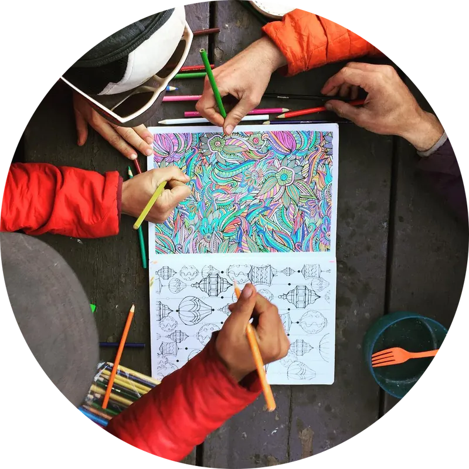
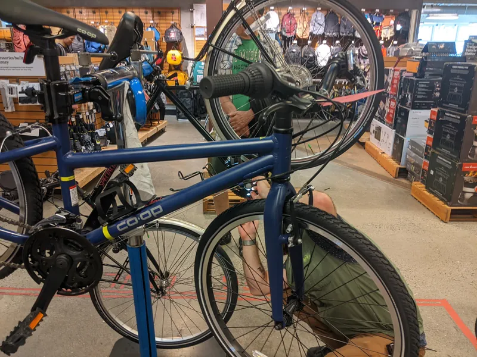
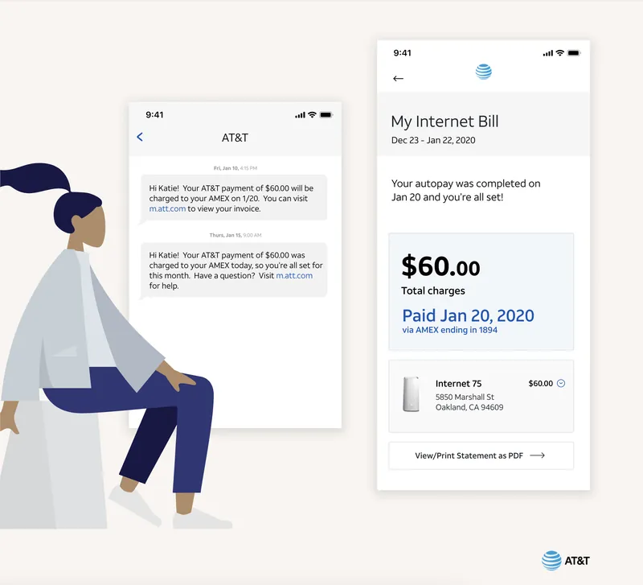
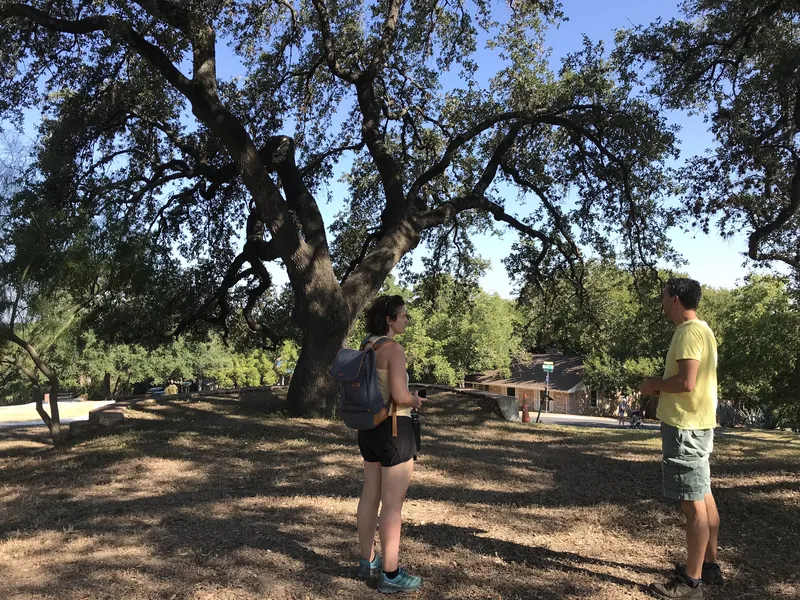
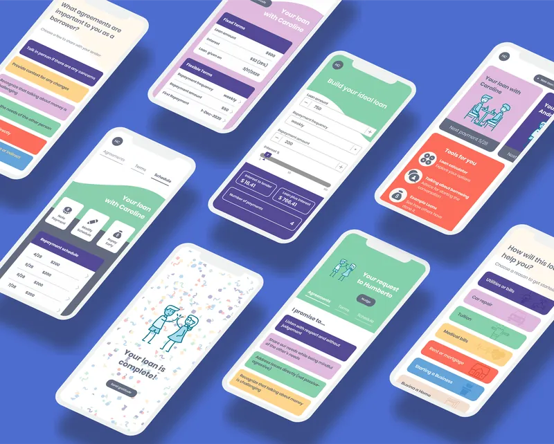
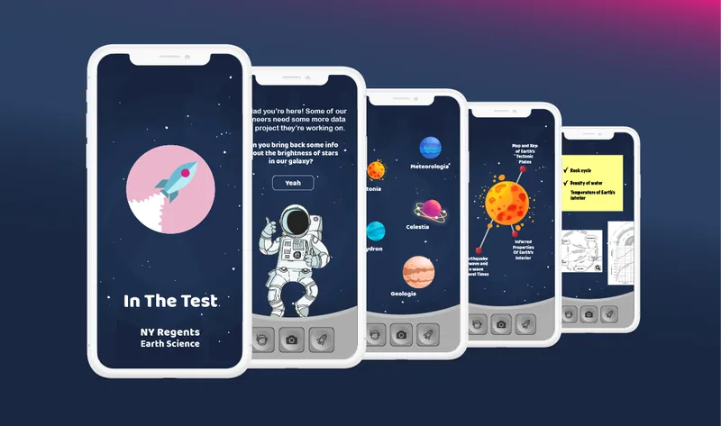
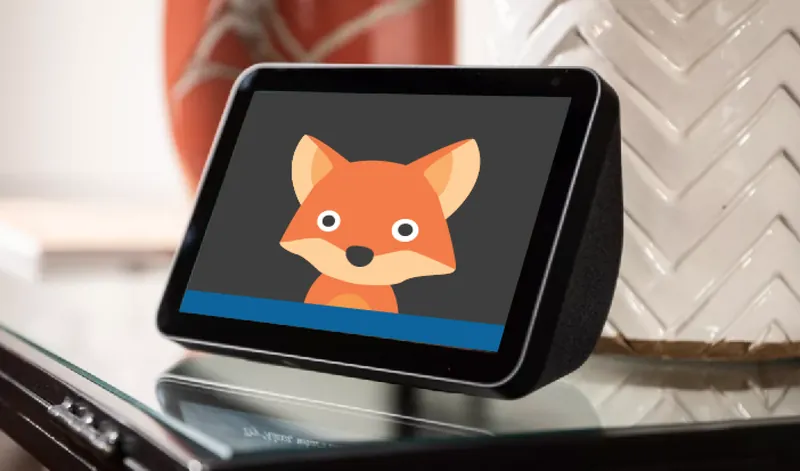
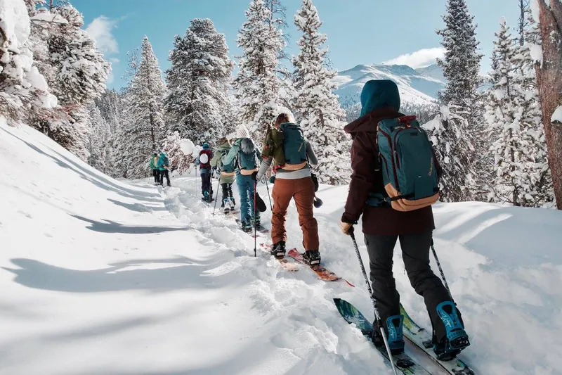
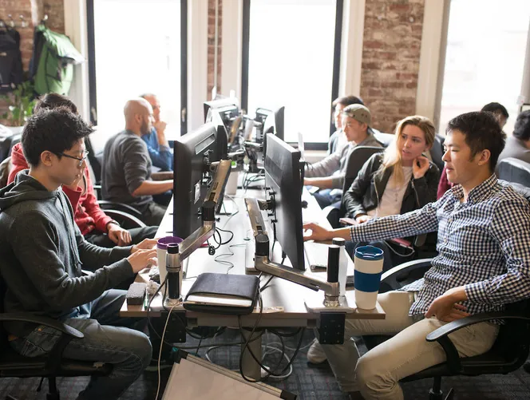

Designing for happy places.
Hi, I'm Michelle. I'm a collaboration-loving, research-oriented product designer working on Canvas, and formerly at REI Co-op and AT&T.
Most design starts with pain points. I hunt for those too, and just as hard for the joyful moments worth making more of.
Recent work
- Canvas · Instructure
Making teaching tools work for teachers
A lightweight way for teachers to sort students and assign differentiated work, shipped in two stages.

- REI Co-op 🔒

Efficient, optimized store fulfillment
- AT&T 🔒

A high-trust, low-stress phone bill
Catching falling fruit.
In Santa Cruz I joined a group gleaning fruit from median trees and backyard orchards, food that would otherwise go to waste. It taught me how much abundance is right in front of us. As a designer, I try to capture the goodness that's already at hand.
Earlier work
- Austin Parks Foundation

Addressing inclusion in parks
- Vouch

Borrowing money and protecting relationships
- In the Test

Raising the bar for test prep apps
- IxDA20: Meet Vera

Creating space for emotional sharing
- Backcountry Babes

Rebuilding sponsor relationships
- Hack Reactor

Co-designing for perfect teams